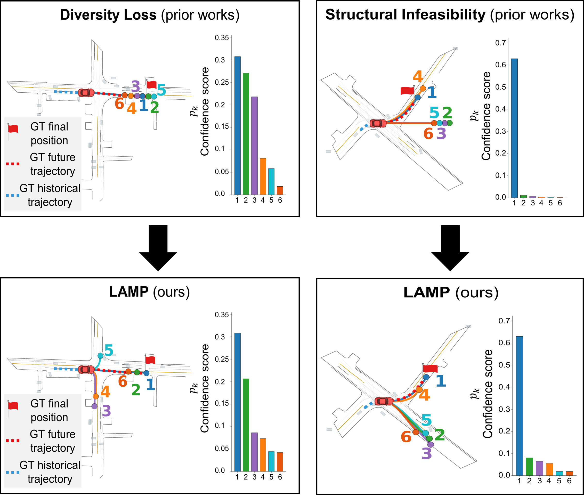
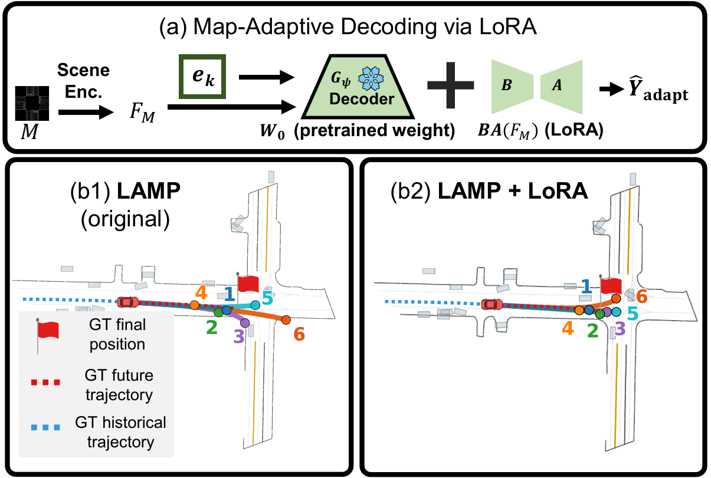

On intersection scenarios, LAMP improves both diversity and feasibility over the MTR baseline — producing trajectories that adhere to lane topology while preserving multimodal coverage.

Multimodal motion forecasting must be accurate, feasible, and diverse to support safe planning. However, existing predictors rely on scene-agnostic intention priors (anchors, target points) and training objectives that prioritize the most-probable ground-truth mode. As a result, lower-probability modes often violate lane topology or traffic rules, producing off-road or unreachable trajectories that are unreliable for downstream planners.
We propose LAMP (Lane-Aligned Motion Primitives), a topology-aware motion forecasting framework that improves the reliability of multimodal prediction sets by combining structured motion primitives with feasibility-aware intention selection.
LAMP builds on two design principles. (i) We learn a discrete codebook of shape-aware motion primitives via an NSVQ-based VQ-VAE, capturing the full spatiotemporal dynamics of driving intentions beyond endpoint-based priors. (ii) We use HD-map reachable-lane sets as a soft teacher distribution to train a lane-topology-guided intention selector that filters infeasible intention queries before they enter the Transformer decoder.
On the Argoverse 2 motion forecasting benchmark, LAMP matches strong baselines on displacement accuracy while substantially improving feasibility — particularly the planner-relevant traffic-rule metric FR (0.665 → 0.774 vs. MTR) — and diversity (DwF 7.811 → 12.559 vs. MTR). This combination of diverse, lane-compliant hypotheses provides more reliable multimodal prediction sets for downstream planning.
LAMP matches strong baselines on displacement accuracy while substantially improving feasibility — particularly the planner-relevant FR metric — and diversity (DwF). Inference runs at 36.47 ms/scenario, comparable to MTR's 33.84 ms.
| Model | b-minADE6 ↓ | b-minFDE6 ↓ | minADE6 ↓ | minFDE6 ↓ | DAC ↑ | FR ↑ | APD6 ↑ | FPD6 ↑ | DwF ↑ |
|---|---|---|---|---|---|---|---|---|---|
| LAMP (Ours) | 1.345 | 2.281 | 0.904 | 1.785 | 0.942 | 0.774 | 6.401 | 16.232 | 12.559 |
| MTR | 1.315 | 2.127 | 0.842 | 1.667 | 0.925 | 0.665 | 4.109 | 10.963 | 7.811 |
| Wayformer | 1.420 | 2.281 | 0.804 | 1.664 | 0.905 | 0.691 | 4.157 | 11.151 | 8.173 |
| Forecast-MAE | 1.379 | 2.125 | 0.751 | 1.492 | 0.937 | 0.692 | 2.983 | 7.728 | 5.657 |
| EMP | 1.385 | 2.141 | 0.749 | 1.503 | 0.934 | 0.684 | 2.936 | 7.608 | 5.524 |
| Autobot | 1.512 | 2.389 | 0.846 | 1.720 | 0.937 | 0.699 | 3.567 | 9.163 | 6.829 |
We compare NSVQ (LAMP's choice) against the original VQ-VAE and FSQ. NSVQ achieves the best displacement accuracy and DwF among the three, thanks to more stable optimization and better codebook utilization.
| Model | b-minADE6 ↓ | b-minFDE6 ↓ | minADE6 ↓ | minFDE6 ↓ | DAC ↑ | FR ↑ | APD6 ↑ | FPD6 ↑ | DwF ↑ |
|---|---|---|---|---|---|---|---|---|---|
| LAMP (NSVQ, Ours) | 1.345 | 2.281 | 0.904 | 1.785 | 0.942 | 0.774 | 6.401 | 16.232 | 12.559 |
| VQ-VAE | 1.362 | 2.442 | 0.975 | 2.064 | 0.936 | 0.710 | 7.623 | 18.258 | 10.911 |
| FSQ | 1.351 | 2.363 | 0.912 | 1.852 | 0.974 | 0.797 | 4.936 | 12.896 | 9.968 |
K = 64 hits the sweet spot. K = 32 lacks the capacity to express diverse intentions; K = 128 suffers from codebook collapse caused by imbalanced updates under fixed top-L selection.
| Model | b-minADE6 ↓ | b-minFDE6 ↓ | minADE6 ↓ | minFDE6 ↓ | DAC ↑ | FR ↑ | APD6 ↑ | FPD6 ↑ | DwF ↑ |
|---|---|---|---|---|---|---|---|---|---|
| NSVQ(32) | 1.340 | 2.334 | 0.942 | 1.947 | 0.938 | 0.759 | 6.065 | 15.992 | 12.514 |
| LAMP (NSVQ-64, Ours) | 1.345 | 2.281 | 0.904 | 1.785 | 0.942 | 0.774 | 6.401 | 16.232 | 12.559 |
| NSVQ(128) | 1.405 | 2.335 | 0.919 | 1.858 | 0.915 | 0.729 | 5.018 | 12.372 | 7.593 |
Filtering infeasible intention queries before decoding (IS, L = 16) substantially improves feasibility and diversity over no selector (L = 64). Too few selected intentions (L = 6) limits decoder capacity, hurting accuracy and DwF despite increasing raw endpoint spread.
| Model | b-minADE6 ↓ | b-minFDE6 ↓ | minADE6 ↓ | minFDE6 ↓ | DAC ↑ | FR ↑ | APD6 ↑ | FPD6 ↑ | DwF ↑ |
|---|---|---|---|---|---|---|---|---|---|
| w/o IS (L=64) | 1.339 | 2.313 | 0.923 | 1.911 | 0.898 | 0.713 | 5.447 | 14.521 | 10.961 |
| IS (L=6) | 1.426 | 2.655 | 1.065 | 2.302 | 0.875 | 0.758 | 8.981 | 18.404 | 11.461 |
| LAMP (IS, L=16, Ours) | 1.345 | 2.281 | 0.904 | 1.785 | 0.942 | 0.774 | 6.401 | 16.232 | 12.559 |
We additionally explored injecting map priors into the NSVQ decoder via Low-Rank Adaptation (LoRA). Conditioning early on map features increases lane compliance (higher DAC and FR), but induces mode contraction — intention queries collapse toward dominant lane-following behaviors — sharply reducing diversity. Because LAMP prioritizes diverse-yet-feasible hypotheses for downstream planning, we exclude LoRA from the final model.

| Model | DAC ↑ | FR ↑ | APD6 ↑ | FPD6 ↑ | DwF ↑ |
|---|---|---|---|---|---|
| LAMP | 0.942 | 0.774 | 6.401 | 16.232 | 12.559 |
| LAMP + LoRA | 0.983 | 0.794 | 3.943 | 10.402 | 8.092 |
@inproceedings{han2026lamp,
title = {LAMP: Lane-Aligned Motion Primitives for Feasible Trajectory Prediction},
author = {Han, Sangjin and Kim, Minseong and Kim, H. Jin},
booktitle = {TODO_VENUE},
year = {2026}
}